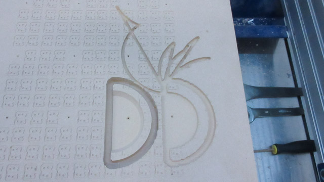

Composites - Part 3
Work in progress
Milling Outer Mold
This is the one piece that was milled that day. There's a story behind it...
Problem Encountered
There was a scary moment when I was milling that piece; and the machine started doing things that I did not understand. Mega thanks to the estop button.These machines are powerful and dangerous. Hence why it was scary to see it doing something that it should not be.
Windell (from Evil Mad Science) helped with trying to figure out why this happened.
The problem was with the gcode. There were a few CG commands, most likely used to create a circle (or an arc). Except that the first parameter was blank. No zero-- there was nothing there.
Another way to debug this would be to run the job without the spindle on, and set at a z zero height above the material. So it would be running through the job in air, but you would be able to better tell when certain movements are happening.
By switching the toolpath strategy to a 3D Raster - Along X, this solved the problem (I checked the gcode for CG before starting it).

Mold Design v5
Changed the design a bit.(Will take screenshots later)
Milling Mold Pieces v5
Back on track, and it was time to mill out some more pieces.Outer mold of the heat shield. There are little designs on the top of the mdf because something was milled on top of this board before. The mdf is really heavy to move... so no worries about the designs.
All of the outer mold pieces being milled:
All pieces
Gluing Pieces Together
In the designs, I made little indent areas that can be used to align the slices of the molds together (lesson learned from the first milling of the aeroshell pieces):This one was a little trickier-- on the cylinder piece it's small little tabs with a indent area that align with the heat shield. The tabs will be able to be cut off later on.

Sanding
Because of the location of the tabs for some of the pieces, the sides are different dimensions. If there is some sliding during the gluing, then it can also result in some of the pieces being mis-aligned.Here you can see the space between the upper and lower molds:
After a bit of time, it can be fixed with careful sanding. The area to the left probably had too much sanding. Here is the two aligning indents matching with the other piece:
After sanding, the upper molds sit well on the lower mold. No wobble. View from above:
Special thanks to Evil Mad Science for their help with the cnc machine